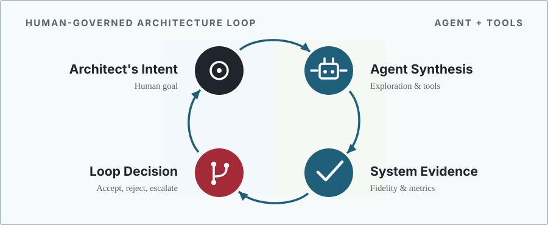

Architecture 2.0
The Discipline of AI-Assisted Computer Architecture

Preface
Computer architecture has a new question. For decades the field asked what machines should be built for new kinds of computation. Capable AI systems now pose the reverse question of what those systems can do for the practice of architecture itself. AI’s role reaches beyond generating more design candidates. AI can help translate workload or product intent into an architecture question, construct and revise alternatives, produce executable artifacts, call design tools, choose experiments, interpret results, and prepare a recommendation. Each of those activities can improve architecture work. Each can also hide a bad assumption, optimize the wrong abstraction, or make a fluent explanation look more certain than the experiment supports.
Architecture 2.0 is the engineering discipline of using AI, grounded in architectural representations, tools, and experiments, to formulate, explore, implement, evaluate, explain, and defend computer architecture decisions.
Computer architecture remains the subject. The unit of work is a bounded architecture study, not an isolated model invocation. The architectural claim is the unit of review. When the work iterates, the design loop records the represented state, allowed actions, tool feedback, evidence, and decision. Supporting records make the work inspectable. The goal is better architectural understanding, a better artifact, or a decision supported by stronger evidence. This loop, shown in the diagram, recurs throughout this material.
Machine learning has long appeared inside architecture mechanisms and bounded optimization workflows. Recent generative models and tool-using AI systems can participate in more of the process that produces and evaluates a claim about a design. The question is what engineering practice that expanded role requires. A credible study must connect intent to concrete alternatives, alternatives to real tools, measurements to architectural mechanisms, and evidence to a recommendation whose limits are stated.
What This Book Teaches
The material has one main learning objective. Given a new, bounded computer architecture problem within the reader’s domain competence, the reader should be able to decide whether and where AI assistance is useful, produce checkable study artifacts, and defend an evidence-bounded recommendation that another architect can inspect and challenge. The six verbs in the definition form a strict epistemic pipeline. While execution iterates in a loop across the middle stages, the overarching structure enforces a rigid dependency graph of trust: one cannot evaluate without an implementation, nor defend without an explanation.
- Formulate: Translate design intent into a scoped study with a stated baseline, design space, objectives, constraints, claims, and non-goals.
- Explore: Choose suitable AI or conventional methods, compare meaningful alternatives, and preserve why serious candidates failed or were rejected.
- Implement: Turn selected alternatives into checkable artifacts connected to the simulators, compilers, RTL, EDA, runtimes, or measurements needed to test the claim.
- Evaluate: Assess the architecture claim and the contribution of AI assistance using justified fidelity, representative workloads, matched baselines, correctness checks, uncertainty bounds, and counterevidence.
- Explain: Form and test an architectural account of why the result occurred through mechanisms such as locality, data movement, contention, parallelism, critical paths, or software interfaces.
- Defend: Make a recommendation that states its tradeoffs, evidence limits, decision ownership, and the conditions that would reverse it.
Implementation here means enough executable structure to test the study’s claim, not necessarily tapeout-ready hardware. Defense means reasoned engineering judgment, not certification or a claim of finality.
One recurring design request, called the Lighthouse prompt—a highly constrained 3W RISC-V XR subsystem operating at the edge of modern thermal and power limits—gives the material a common long-term target. sec-moonshot introduces the request, and later chapters return to it when it helps explain a particular part of an architecture study. A later worked study shows what current tools can establish with executable evidence. Together, the examples distinguish the long-term ambition from what the current evidence supports.
Architecture 2.0 remains computer architecture, and it is best understood as the point where several mature disciplines meet. The subject and the standard of judgment stay architectural. What is new is that working with a capable but fallible AI participant forces the field to borrow methods that other disciplines already built to use powerful, unreliable tools without being misled by them.
Several traditions supply those methods. Experimental science contributes falsifiable claims and the preregistration that stops a search from rationalizing its result after the fact. Statistics and decision science contribute calibration, uncertainty quantification, sequential experiment choice, and the winner’s-curse caution that governs any search over many candidates. Systems safety contributes independent challenge, assurance arguments, and the explicit assignment of decision authority. Benchmarking contributes shared tasks, provenance, and resistance to gaming a proxy. Software engineering and electronic design automation supply the executable substrate of version control, tool interfaces, and design flows on which the work runs. The human and organizational sciences supply tacit knowledge, automation bias, and decision rights. The field also adapts first-principle ideas from more distant work, such as state estimation from control theory, the practice of inferring a system’s hidden internal state from noisy measurements, which is close to the problem of inferring a design’s true performance, power, and area from partial, multi-fidelity tool readings.
Computer architecture stays the subject. These fields supply methods and standards, not the questions or the object of judgment. What this material adds is the mapping from each borrowed idea to the point in an architecture study where it belongs, so that AI assistance produces evidence an architect can check rather than a more fluent claim.
Using AI across an architecture study changes both what teams must keep and what reviewers must evaluate. Workload traces, design artifacts, and tool outputs still matter. So do problem formulations, alternatives, interface assumptions, experiment choices, mechanism-level explanations, failed attempts, and rejected candidates. The final design alone may not show why the team reached its conclusion. Conversely, even a complete log is not an architecture contribution if it lacks an architecture question or mechanism-level explanation.
The discussion focuses on engineering questions rather than particular AI products. The scope is AI assistance within architecture studies. This material does not propose replacing computer architects, EDA, verification, compiler and toolchain engineering, or systems operations with a general AI layer. It does not give a model authority over an architecture decision merely because it emitted a plausible artifact. Architecture work still depends on expertise, interfaces, constraints, tests, and measurements. AI can participate throughout the study. Named people or organizational roles remain responsible for setting the question, judging the explanation, deciding what the evidence supports, and specifying where the recommendation applies.
Book Structure
The sequence from sec-moonshot through sec-architecture-20-ontology frames the ambition, diagnoses why existing practice strains, and defines the claim, study, and design loop. The sequence from sec-data-representations-world-models through sec-feedback-verification-trust develops the representations, tool interfaces, methods, and evidence needed to run such work. sec-running-the-loop then executes a study, sec-loop-patterns-across-stack compares the approach across the computing stack, and sec-what-architect-owns returns to architectural judgment and responsibility.
Who This Book Is For
This is a compact synthesis for readers who already know computer architecture and want a framework for AI-assisted practice. It assumes enough fluency to follow performance, energy, area, and software-interface tradeoffs and to read an architecture paper, simulator, workload, or design report. It does not assume a machine-learning or reinforcement-learning background. The AI ideas needed for the argument are introduced in an architectural context.
Because Architecture 2.0 sits at the intersection of two distinct disciplines, we designed the material to serve four specific reader personas across a cross-domain quadrant:
{kind=link}
As shown in Figure fig-audience-quadrant, these roles each require different capabilities:
- The AI Strategist: Machine learning leaders who need to understand the fundamental physics bottlenecks, the ROI of AI integration, and the structural limits of the hardware design space (sec-moonshot, sec-design-loop-no-longer-scales, sec-methods-generation-prediction-optimization).
- The ML Researcher: Machine learning practitioners and tool builders who require concrete EDA tool API mechanics, data representations, and physics-bound search metrics to build effective agents (sec-data-representations-world-models, sec-architecture-environments-tool-interfaces, sec-evaluating-agentic-architect).
- The Computer Architect: Hardware implementers who need to know how to integrate AI securely, manage simulator fast feedback, and safely evaluate the design space (sec-feedback-verification-trust, sec-running-the-loop).
- The Chief Architect: Senior architects who hold final product accountability and must navigate epistemic trust boundaries, formal verification limits, and legal evidence requirements (sec-loop-patterns-across-stack, sec-what-architect-owns).
These quadrants map directly to the practical goals of the readership. A graduate student (the Computer Architect) should learn to conduct a well-scoped study rather than merely acquire a vocabulary. A reviewer (the Chief Architect) should be able to test the claim, mechanism, comparison, and evidence rather than judge only a generated artifact. An author (the ML Researcher) should be able to explain where AI contributed and defend the recommendation without overstating it. A practitioner (the AI Strategist) should be able to decide which work to delegate and where architectural judgment is still required.
The common test across all four personas is transfer to a problem other than the Lighthouse.
How to Read This Book
Each chapter opens with a guiding question and a short list of what you will be able to do after reading it. The Lighthouse request appears several times, and each return examines a different part of the architecture study. A later worked study becomes the main empirical example once the required representations, environment, method roles and budgets, and evidence rules are in place. When the text or a figure depicts an agent, read it as one participant in the study rather than a claim about implementation. Its name matters less than the architecture work it is allowed to perform and the evidence required from that work.
Choose the reading route that matches your purpose:
- Orientation: Read the Preface, sec-moonshot, and sec-what-architect-owns.
- Research review: Read the orientation route, then add sec-architecture-20-ontology, sec-data-representations-world-models, sec-feedback-verification-trust, and the worked study in sec-running-the-loop.
- Method and environment design: Read sec-design-loop-no-longer-scales through sec-feedback-verification-trust, see the pieces run as one study in sec-running-the-loop, then compare regimes in sec-loop-patterns-across-stack.
- Full argument: Read the chapters in order.
For hands-on practice, use the bootstrap path in sec-appendix-a-bootstrapping. To apply the approach to a new problem, readers should declare its limits and prepare a study brief, method rationale, tool path, evaluation packet, tested mechanism explanation, and decision memo that states what the evidence does and does not support.
AI systems do not remove the architect. Architects will spend more time choosing abstractions, stating tacit constraints, directing tools and experiments, interpreting cross-layer effects, and deciding what the evidence supports. Rather than wait for a system that designs a computer from a single sentence, architects can build the representations, datasets, environments, methods, experimental practices, and professional judgment that let architects use AI well. Architecture 2.0 will matter if it helps architects formulate better questions, explore stronger alternatives, implement checkable artifacts, evaluate them with appropriate evidence, explain the mechanisms involved, and make recommendations that others can assess within stated limits.
Vijay Janapa Reddi